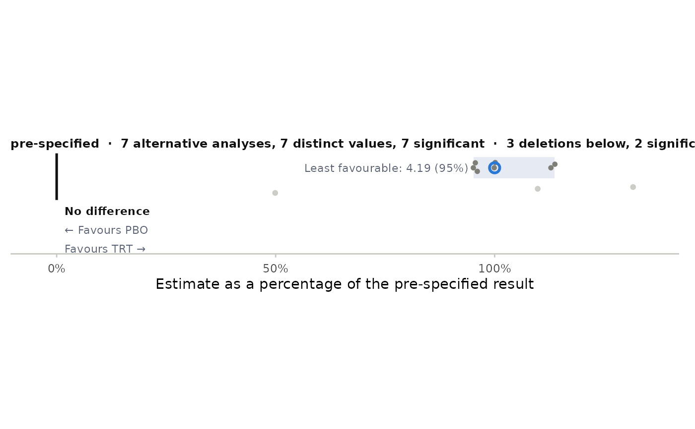

One row per census. Each bubble is one distinct estimate among the counted
alternative analyses (rounded to digits), with area proportional to the
number of analyses giving that value and shade by the share of those
analyses that are significant; bubbles holding five or more analyses are
numbered. A ring marks the pre-specified estimate, the shaded band holds
the central 95% of the distinct values, the heavy vertical line is no
difference, and the least favourable alternative is labelled. Deletions
are a strip of small light dots beneath the swarm.
Usage
plot_swarm(
x,
scale = c("percent", "estimate"),
digits = 2,
r0 = 0.004,
favours = NULL,
xlab = NULL,
xlim = NULL
)Arguments
- x
A
stress_census, or a named list of them (one row each, drawn on a shared axis; the first is drawn at the top).- scale
"percent"draws estimates as a percent of the pre-specified estimate, so several endpoints share an axis;"estimate"uses the response units (only sensible for one census or censuses on one scale).- digits
Rounding used to decide which estimates are "the same value".
- r0
Radius of a count-one bubble as a fraction of the x-axis range.
- favours
Labels for the two sides of no difference, in the order (reference arm, active arm). Defaults to the treatment level names.
- xlab
Axis label;
NULLfor a default.- xlim
Axis limits;
NULLfor automatic limits that include zero.
Examples
spec <- stress_spec(mmrm::fev_data, "FEV1", "USUBJID", "AVISIT", "ARMCD", "PBO",
covariates = ~ RACE + SEX + FEV1_BL)
cen <- stress_census(spec, stress_covariance(spec, c("us", "cs", "ar1h", "toep")),
stress_covariates(spec), stress_loo(spec, by = "RACE"))
if (requireNamespace("ggplot2", quietly = TRUE)) plot_swarm(cen)
